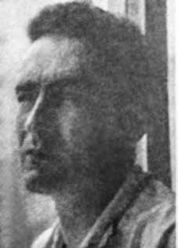

Wânio
José
de Mattos
CIRCUNSTÂNCIAS DA MORTE
Wânio foi um dos mais de cem brasileiros que ficaram detidos no Estádio Nacional de Santiago – transformado, nas semanas seguintes ao golpe de Estado, no mais notório centro de detenção da capital chilena que, segundo a Cruz Vermelha Internacional, chegou a abrigar cerca 7 mil prisioneiros no fim de setembro e foi palco de torturas e execuções. Sua filha Roberta Romaniolo relatou, em entrevista ao jornal “A Notícia” de Joinville (SC) em 2003, que toda a família foi presa junta e depois separada – a filha chegou a ser arbitrariamente separada da mãe, até ser levada de volta à cela e depois entregue a uma vizinha. Mãe e filha foram posteriormente transferidas, com a ajuda dos organismos internacionais, a um refúgio sob bandeira suiça e de lá partiram para o exílio na França. Wânio não teve a mesma sorte. O Estado brasileiro não ofereceu qualquer assistência a seus nacionais levados ao Estádio Nacional ou outros centros de detenção. Ao contrário: a pesquisa documental realizada pela CNV comprovou que em vários casos a atuação do Ministério das Relações Exteriores impediu ou dificultou soluções que teriam permitido uma libertação mais rápida daqueles brasileiros. i Mais do que isso: documentos e depoimentos de diversas fontes, brasileiras e chilenas, corroboram que uma equipe de agentes brasileiros esteve no Estádio Nacional para interrogar os detidos brasileiros e ensinar técnicas de tortura aos militares chilenos. ii No processo judicial (pelo homicídio de Wânio) em curso no Chile, consta depoimento do major Sérgio Manuel Fernández Carranza, à época capitão, encarregado da Seção de Estrangeiros do campo de detenção do Estádio Nacional, que afirma textualmente que: […] „os detidos do Brasil, Argentina e Uruguai eram interrogados por interrogadores enviados pelas ditaduras de seus países‟ e que certa vez foi-lhe transmitido „convite do corpo de interrogadores brasileiros para presenciar um interrogatório‟, o que ele teria recusado, e ainda que levaram-no para „conhecer as instalações dos interrogadores estrangeiros […], as quais estavam equipadas com „parrilla‟ [cama metálica para aplicação de descargas elétricas]e elementos para pendurar as pessoas e torturar‟. Os agentes brasileiros teriam chegado ao Estádio por volta do dia 16 de outubro. Infere-se, dessa informação e dos depoimentos dos presos que com ele conviveram em seus últimos momentos, que Wânio não chegou a ser submetido a sessões de tortura por esses agentes. Simplesmente, as autoridades do Estádio Nacional deixaram-no morrer, privando-o dos cuidados médicos que se impunham em sua situação. O médico brasileiro Otto Brockes, que estava preso com Wânio no Estádio Nacional, prestou depoimentos à CNV e à Subcomissão de Memória, Justiça e Verdade do Senado Federal em que relatou o que aconteceu: (Wânio) evoluiu numa situação difícil. Nós passamos muito tempo sem comer. Pedia casca de laranja e tudo que pudesse comer para fazer volume, porque o intestino não funcionava. O Wânio começou com constipação intestinal. […] Aquilo foi evoluindo. De repente, o Wânio começou a sentir sintomas de dor. Examinei e fiz um diagnóstico de abdômen agudo, que tinha que ser operado e examinado por outros meios. Otto escreveu um relatório e tentou entregá-lo aos médicos do Estádio, mas ele e Wânio foram mandados de volta à cela. Continuou insistindo, inclusive com a ajuda do reitor da faculdade de medicina, que também se encontrava preso, até que conseguiram levar novamente Wânio ao serviço médico: […] mas, com isso, já haviam se passado quatro dias. Era uma cirurgia de urgência, e passaram mais aqueles dias. Aí, eles resolveram atender. Parece que isso foi numa segunda-feira – não tenho certeza da data. Na quarta ou quinta-feira, chegou a notícia de que eles foram operar, mas estava tudo gangrenado, e o Wânio morreu. Foi um crime praticado por médicos, por militares. […] Ele foi vítima da falta de assistência. Um crime hediondo, uma coisa sem explicação. Na mesma audiência do Senado, também Vitório Sorotiuk, Ubiramar Peixoto de Oliveira e Dirceu Luiz Messias, que estiveram com Wânio naquela etapa, testemunharam sobre o sofrimento por que passou. A CNV teve acesso aos autos judiciais do processo criminal atualmente em curso no Chile para investigação do homicídio de Wânio de Mattos. Os documentos e depoimentos nele contidos corroboram o relato de Otto Brockes e seus companheiros. No relatório da visita realizada ao Estádio Nacional em 13 de outubro de 1973 pelo Comitê Internacional da Cruz Vermelha, consta que Wânio apresentava sintomas de obstrução intestinal crescente com constipação e vômitos, tendo que esperar dez dias para ser admitido na enfermaria, apesar dos reiterados pedidos de seus companheiros. O delegado médico da Cruz Vermelha aconselhou sua transferência imediata ao Hospital Militar, o que foi primeiro negado pelo médico de plantão, e depois determinado pelo comandante do campo, Coronel Espinoza. Wânio, no entanto, não chegou a ser transferido. Relatório de visita posterior do CICR ao Estádio registra que faleceu três dias depois, ao ser operado no hospital de campanha do próprio estádio. O Relatório da Comissão Nacional de Verdade e Reconciliação do Chile (Informe Rettig) registra, a respeito do caso: No dia 16 de outubro de 1973, morre José Wannio de Mattos Santos [sic], brasileiro, 47 anos. Fontes altamente confiáveis declararam a esta Comissão que já estava detido e doente em 13 de outubro de 1973, no Estádio Nacional. […] Solicitado ao delegado médico no Estádio Nacional seu traslado ao Hospital Militar, este foi negado. Como consequência disso, falece no dia 16 de outubro de 1973, no Hospital de Campanha do Estádio Nacional, em razão de uma „peritonite aguda‟. É convicção desta Comissão que José Wanio de Mattos faleceu por se haver negado o auxílio médico oportuno e eficaz requerido, por parte de agentes do Estado, constituindo uma grave violação a seu direito à integridade física e à sua vida. Segundo a certidão de óbito, Wânio morreu à 1h15 do dia 16 de outubro, sendo a causa da morte peritonite aguda. O laudo de autópsia é assinado pelo Dr. Alfredo Vargas Baeza, diretor do Instituto Médico-Legal de Santiago, o mesmo que atestou a morte de dezenas de pessoas após o golpe de Estado, inclusive a do brasileiro Nelson de Souza Kohl. Entre os documentos coligidos no Chile, encontra-se uma Resolução do Diretor da V Zona de Saúde de Santiago, datada de 28 de novembro de 1973, concedendo autorização ao Sr. Samuel Nalegash, secretário-geral do Comitê Nacional de Ajuda aos Refugiados, para cremação do corpo de Wânio de Mattos e retirada e traslado internacional de suas cinzas. Consta ainda procuração passada por S. Nalegash à assistente social Eliana Arias, para esses fins. Segundo esses documentos, no dia 30 daquele mês, Eliana Arias teria comparecido ao Cemitério Geral, quitado os valores de sepultura, exumação e cremação de Wânio de Mattos e retirado suas cinzas, para remetê-las ao endereço da mãe de Wânio no Brasil. Não há informações adicionais sobre o que foi feito com as cinzas, possivelmente entregues à mãe de Wânio. Eliana Arias foi procurada para depôr no processo judicial, mas já faleceu. Foi ouvido, no processo judicial, o médico que teria praticado a intervenção cirúrgica em Wânio, Miguel Tapia de la Puente, cirurgião militar, à época major. Em seu depoimento, revelou que Wânio já havia morrido antes de iniciar-se a operação. Ainda assim, Tapia de la Fuente abriu seu abdome para verificar a etiologia da obstrução que causara a morte, concluindo que ela teria tido origem em um câncer do intestino. Seu superior, médico residente chefe do Hospital Militar, Patrício Silva Garín, afirmou por sua vez que o Hospital de Campanha do Estádio Nacional estava preparado apenas para cirurgias de menor gravidade e que um diagnóstico de peritonite aguda requereria internação imediata em hospital com instalações completas de cirurgia, e indicou como grave falta ética a abertura do abdome de paciente que já se encontrava morto. Os depoimentos médicos colhidos no processo deixam claro que a omissão de assistência em tempo hábil acarretou a morte de Wânio de Mattos. A Embaixada do Brasil recebeu da chancelaria chilena, no dia 24 de outubro de 1973, comunicação formal de que “o cidadão brasileiro Wânio Jose Matus Santos (sic) faleceu no dia 16 do mês em curso, no Hospital de Campanha do Campo de Detidos do „Estádio Militar‟, enquanto era submetido a intervenção cirúrugica”. A nota verbal RIAS n o 16292 veio acompanhada da certidão de óbito de Wânio, e a Embaixada dela acusou formalmente recebimento pela nota verbal n o 218 de 31 de outubro. No mesmo dia, o Conselheiro Claudio Luiz dos Santos Rocha, Encarregado da Embaixada na ausência do Embaixador Câmara Canto, transmite por telegrama a informação à Divisão de Segurança e Informação (DSI/MRE) em Brasília, e envia o original da certidão de óbito pela mala diplomática. No dia 17 de novembro, o Cônsul-Geral Adjunto, encarregado do Consulado-Geral do Brasil em Santiago, Luiz Loureiro Dias Costa, comunica por telegrama secreto à DSI que foi procurado pela Srta. Eliana Arias, do Comitê de Ajuda aos Refugiados, que lhe solicitou, após apresentar-lhe certidão de óbito, carteira de identidade e documento de viagem para estrangeiros de que era titular Wânio de Mattos, assinar petição para a cremação do corpo, ao que lhe respondeu que deveria consultar a Secretaria de Estado em Brasília, uma vez que a cremação deveria ser autorizada por pessoa da família. Por ofício secreto da mesma data, remete a Brasília cópias xerox dos documentos que lhe foram apresentados. Na cópia desse expediente, localizada no Arquivo do Ministério das Relações Exteriores, constam várias anotações manuscritas: na primeira, o Chefe da Seção de Informações da DSI registra que “o assunto foi registrado na DSI para as providências de informação de sua competência” e encaminha o expediente ao Departamento Consular e Jurídico para os fins solicitados pelo Consulado. Outra anotação, datada de 20 de março de 1974, registra que foi pedida 2a via da certidão de óbito para encaminhamento ao Ministério da Justiça; outra ainda, de 12 de novembro de 1974, indica que “a DSI informa não conhecer o endereço dos familiares” e que foi notificado o Consulado em Santiago. A informação sobre a morte de Wânio circulou também por outros meios: em 31 de dezembro de 1973, o Centro de Informações do Exterior (CIEX/MRE) encaminha ao SNI, CIE, Cenimar, CISA e às 2as seções dos Estados Maiores das três Forças fotocópias da nota da chancelaria chilena e da certidão de óbito. Por sua vez, a DSI/MRE remete ao SNI e aos Centros de Informação das três Forças e do Departamento de Polícia Federal, em 8 de janeiro de 1974, as cópias do atestado e documentos de Wânio recebidas do Consulado em Santiago, e no dia 5 de fevereiro volta a comunicar a todos os órgãos de informação as notícias e documentos relativos ao assunto recebidas tanto da Embaixada quanto do Consulado, inclusive quanto à gestão do Comitê de Ajuda aos Refugiados. A notícia da morte de Wânio consta também em documento do Centro de Informações da Aeronáutica datado de 23 de novembro de 1973, que informa ao II Exército e ao DEOPS/SP que, segundo dados obtidos de fontes diversas (são mencionados, como referência, todos os órgãos de inteligência citados anteriormente), “teriam sido mortos no Chile, durante a Revolução de 11/9/73, ocorrida naquele país”, uma relação de brasileiros, entre os quais Wânio de Mattos. O governo brasileiro – Ministérios das Relações Exteriores e da Justiça, Forças Armadas e órgãos de inteligência – tinha, portanto, pleno conhecimento do que ocorrera a Wânio de Mattos. Ainda assim, os relatórios militares sobre os desaparecidos políticos encaminhados ao ministro da Justiça, Maurício Corrêa, em 1993, indicam apenas, no caso da Marinha, que Wânio foi banido do país, enquanto o relatório da Aeronáutica registra que “teria sido morto no Estádio Nacional de Santiago, segundo a imprensa”, e o do Exército que “de acordo com o Jornal do Brasil em sua edição de 6 mar 71 (sic), teria sido morto no Chile”. Não há, por outro lado, registro de nenhuma comunicação oficial à família de Wânio, antes da inclusão do caso no Relatório Rettig, no Chile, em 1991. Em junho de 2011, foi instaurado perante a Corte de Apelações de Santiago, por iniciativa do Ministério Público chileno, ao qual se associaram posteriormente a “Agrupación de Familiares de Ejecutados Políticos” e o Ministério do Interior (Programa Continuación de la Ley no 19.123), o processo criminal Rol no 179-2011, distribuído ao 34o Juzgado del Crimen, para investigar e apurar responsabilidades no homicídio de Wânio José de Mattos. A CNV examinou os autos judiciais e atuou como facilitadora para que sejam tomados os depoimentos dos brasileiros que estiveram com Wânio no Estádio. No dia 4 de novembro de 2014, Vitório Sorotiuk, um dos últimos brasileiros que viu Wânio com vida, prestou testemunho no processo, em Santiago. Relatou as condições de detenção, os esforços para obterem atendimento médico para Wânio, como ele foi levado uma vez para atendimento e devolvido para a cela e como, juntamente com outras três pessoas, cada um segurando em uma ponta de um cobertor, conduziram-no torcendo-se em dores até umas das tendas do exército chileno instaladas no entorno no Estádio, e nunca mais o viram. Vitório Sorotiuk prestou também depoimento, no dia 7 de novembro de 2014, em outro processo no mesmo 34o Juzgado del Crimen (Rol 368-2012), em que se investiga a presença de policiais ou militares brasileiros nos interrogatórios de prisioneiros brasileiros no Estádio Nacional do Chile em outubro de 1973. A CNV também transmitiu cópia dos autos do processo judicial sobre Wânio ao Ministério Público Federal, para facilitar o acompanhamento, a interlocução e o assessoramento cabível aos responsáveis pelo processo no Chile.
Wânio was one of more than a hundred Brazilians who were detained at the National Stadium in Santiago – transformed, in the weeks following the coup d'état, into the most notorious detention center in the Chilean capital which, according to the International Red Cross, housed around 7,000 prisoners at the end of September and was the scene of torture and executions. Her daughter Roberta Romaniolo reported, in an interview with the Joinville (SC) newspaper “A Notícia” in 2003, that the entire family was arrested together and then separated – the daughter was even arbitrarily separated from her mother, until she was taken back to her cell and then handed over to a neighbor. Mother and daughter were later transferred, with the help of international organizations, to a refuge under the Swiss flag and from there they went into exile in France. Wânio wasn't as lucky. The Brazilian State did not offer any assistance to its nationals taken to the National Stadium or other detention centers. On the contrary: the documentary research carried out by the CNV proved that in several cases the actions of the Ministry of Foreign Affairs prevented or hindered solutions that would have allowed the faster release of those Brazilians. i More than that: documents and testimonies from several sources, Brazilian and Chilean, corroborate that a team of Brazilian agents was at the National Stadium to interrogate Brazilian detainees and teach torture techniques to the Chilean military. ii In the judicial process (for the murder of Wânio) underway in Chile, there is a testimony from Major Sérgio Manuel Fernández Carranza, at the time captain, in charge of the Foreigners Section of the National Stadium detention camp, who states verbatim that: [...] „the detainees from Brazil, Argentina and Uruguay were interrogated by interrogators sent by the dictatorships of their countries‟ and that he was once sent an „invitation from the body of Brazilian interrogators to to witness an interrogation', which he allegedly refused, and even though they took him to 'visit the foreign interrogators' facilities [...], which were equipped with a 'parrilla' [metal bed for applying electrical discharges] and elements for hanging people and torturing'. The Brazilian agents would have arrived at the Stadium around October 16th. lived together in his last moments, that Wânio was not subjected to torture sessions by these agents. The authorities at the National Stadium simply let him die, depriving him of the medical care that was required in his situation. for a long time without eating. He asked for orange peel and everything he could eat to bulk up, because his intestines weren't working. Otto started having constipation. […] Suddenly, Wânio started to feel symptoms of pain. including with the help of the dean of the medical school, who was also in prison, until they managed to take Wânio to the medical service again: […] but, with that, four days had already passed. It was an emergency surgery, and then they decided to attend. […] He was the victim of a lack of assistance. A heinous crime, something without explanation. At the same Senate hearing, Vitório Sorotiuk, Ubiramar Peixoto de Oliveira and Dirceu Luiz Messias, who were with Wânio at that stage, also testified about the suffering he went through. The CNV had access to the court records of the criminal case currently underway in Chile to investigate the murder of Wânio de Mattos. The documents and testimonies contained therein corroborate the account of Otto Brockes and his companions. In the report of the visit carried out to the National Stadium on October 13, 1973 by the International Committee of the Red Cross, it is stated that Wânio presented symptoms of increasing intestinal obstruction with constipation and vomiting, having to wait ten days to be admitted to the infirmary, despite repeated requests from his companions. The Red Cross medical delegate advised his immediate transfer to the Military Hospital, which was first denied by the doctor on duty, and then determined by the camp commander, Colonel Espinoza. Wânio, however, was never transferred. A report from the CICR's subsequent visit to the Stadium records that he died three days later, after undergoing surgery in the stadium's own field hospital. The Report of the National Truth and Reconciliation Commission of Chile (Rettig Report) records, regarding the case: On October 16, 1973, José Wannio de Mattos Santos [sic], Brazilian, 47 years old, dies. Highly reliable sources declared to this Commission that he was already detained and ill on October 13, 1973, at the National Stadium. […] The medical delegate at the National Stadium was asked to be transferred to the Military Hospital, which was denied. As a result of this, he died on October 16, 1973, at the National Stadium Field Hospital, due to 'acute peritonitis'. It is the conviction of this Commission that José Wanio de Mattos died due to the denial of timely and effective medical assistance required by State agents, constituting a serious violation of his right to physical integrity and to his life. According to the death certificate, Wânio died at 1:15 am on the day October 16, the cause of death being acute peritonitis. The autopsy report was signed by Dr. Alfredo Vargas Baeza, director of the Santiago Legal Institute, the same person who attested to the deaths of dozens of people after the coup d'état, including that of Brazilian Nelson de Souza Kohl. Among the documents collected in Chile, there is a Resolution from the Director of the V Health Zone of Santiago, dated November 28, 1973, granting authorization. to Mr. Samuel Nalegash, general secretary of the National Refugee Aid Committee, for the cremation of Wânio de Mattos' body and the removal and international transfer of his ashes. There is also a power of attorney issued by S. Nalegash to the social worker Eliana Arias, for these purposes, according to these documents, on the 30th of that month, Eliana Arias would have attended the General Cemetery, paying the burial, exhumation and cremation fees for Wânio de Mattos and. removed his ashes, to send them to Wânio's mother's address in Brazil. There is no additional information about what was done with the ashes, possibly given to Wânio's mother. Eliana Arias was sought to testify in the legal process, but the doctor who had performed the surgical intervention on Wânio, Miguel Tapia de la Puente, at the time a major, revealed in his testimony that Wânio had already died before his death. Even so, Tapia de la Fuente opened his abdomen to check the etiology of the obstruction that had caused his death, concluding that it had originated from bowel cancer. His superior, chief resident physician at the Military Hospital, Patrício Silva Garín, stated that the National Stadium Field Hospital was prepared only for minor surgeries and that a diagnosis of acute peritonitis would require immediate admission to a hospital with complete surgery facilities, and indicated that opening the abdomen of a patient who was already dead was a serious ethical misconduct. The medical testimonies collected in the process make it clear that the failure to provide timely assistance led to the death of Wânio de Mattos. The Brazilian Embassy received from the Chilean Foreign Ministry, on October 24, 1973, formal communication that “the Brazilian citizen Wânio Jose Matus Santos (sic) passed away on the 16th of the current month, in the Field Hospital of the Detainee Camp of the „Military Stadium‟, while undergoing surgical intervention”. RIAS note verbal no. 16292 was accompanied by Wânio's death certificate, and the Embassy formally acknowledged receipt by note verbal no. 218 of October 31. On the same day, Counselor Claudio Luiz dos Santos Rocha, in charge of the Embassy in the absence of Ambassador Câmara Canto, telegrams the information to the Security and Information Division (DSI/MRE) in Brasília, and sends the original of the death certificate via the diplomatic bag. On November 17th, the Deputy Consul General, in charge of the Consulate General of Brazil in Santiago, Luiz Loureiro Dias Costa, communicated by secret telegram to the DSI that he was contacted by Ms. Eliana Arias, from the Refugee Aid Committee, who asked him, after presenting him with the death certificate, identity card and travel document for foreigners that Wânio de Mattos held, to sign a petition for the cremation of the body, to which he replied that he should consult the State Secretariat in Brasília, since the cremation must be authorized by a family member. By secret letter dated the same date, he sent xerox copies of the documents presented to him to Brasília. The copy of this file, located in the Archives of the Ministry of Foreign Affairs, contains several handwritten notes: in the first, the Head of the Information Section of the DSI records that “the matter was registered with the DSI for information measures within its competence” and forwards the file to the Consular and Legal Department for the purposes requested by the Consulate. Another note, dated March 20, 1974, records that a second copy of the death certificate was requested to be forwarded to the Ministry of Justice; yet another, dated November 12, 1974, indicates that “the DSI reports that it does not know the address of the family members” and that the Consulate in Santiago was notified. Information about Wânio's death also circulated through other means: on December 31, 1973, the Foreign Information Center (CIEX/MRE) sent photocopies of the note from the Chilean chancellery and the death certificate to the SNI, CIE, Cenimar, CISA and the 2nd sections of the General Staff of the three Forces. In turn, the DSI/MRE sent to the SNI and the Information Centers of the three Forces and the Federal Police Department, on January 8, 1974, copies of Wânio's certificate and documents received from the Consulate in Santiago, and on February 5, it again communicated to all information bodies the news and documents relating to the matter received from both the Embassy and the Consulate, including the management of the Refugee Aid Committee. The news of Wânio's death also appears in a document from the Air Force Information Center dated November 23, 1973, which informs the II Army and DEOPS/SP that, according to data obtained from different sources (all the intelligence agencies mentioned above are mentioned), “they would have been killed in Chile, during the Revolution of 9/11/73, which occurred in that country”, a list of Brazilians, including Wânio de Mattos. The Brazilian government – Ministries of Foreign Affairs and Justice, Armed Forces and intelligence agencies – was therefore fully aware of what had happened to Wânio de Mattos. Even so, the military reports on the missing politicians sent to the Minister of Justice, Maurício Corrêa, in 1993, only indicate, in the case of the Navy, that Wânio was banished from the country, while the Air Force report records that “he was killed at the National Stadium in Santiago, according to the press”, and the Army report that “according to Jornal do Brasil in its edition of 6 March 71 (sic), he was killed in Chile”. There is, on the other hand, no record of any official communication to Wânio's family, before the case was included in the Rettig Report, in Chile, in 1991. In June 2011, it was filed before the Court of Appeals of Santiago, on the initiative of the Chilean Public Ministry, which was later joined by the “Agrupación de Familiares de Ejecutados Políticos” and the Ministry of the Interior (Programa Continuación de la Ley no. 19.123), criminal case Rol no. 179-2011, distributed to the 34th Juzgado del Crimen, to investigate and determine responsibilities in the homicide of Wânio José de Mattos. The CNV examined the court records and acted as a facilitator for the statements of the Brazilians who were with Wânio at the Stadium to be taken. On November 4, 2014, Vitório Sorotiuk, one of the last Brazilians to see Wânio alive, gave testimony in the process, in Santiago. He reported the conditions of detention, the efforts to obtain medical attention for Wânio, how he was taken once for treatment and returned to his cell and how, together with three other people, each holding one end of a blanket, they took him, twisting in pain, to one of the Chilean army tents installed around the Stadium, and never saw him again. Vitório Sorotiuk also gave testimony, on November 7, 2014, in another process in the same 34th Juzgado del Crimen (Role 368-2012), in which the presence of Brazilian police or military personnel in the interrogations of Brazilian prisoners at the Chilean National Stadium in October 1973 is being investigated. interlocution and appropriate advice to those responsible for the process in Chile.
Wânio fue uno de los más de cien brasileños detenidos en el Estadio Nacional de Santiago, transformado, en las semanas posteriores al golpe de Estado, en el centro de detención más famoso de la capital chilena que, según la Cruz Roja Internacional, albergaba a unos 7.000 prisioneros a finales de septiembre y fue escenario de torturas y ejecuciones. Su hija Roberta Romaniolo denunció, en una entrevista concedida al periódico “A Notícia” de Joinville (SC), en 2003, que toda la familia fue detenida junta y luego separada; la hija fue incluso separada arbitrariamente de su madre, hasta que la llevaron de nuevo a su celda y luego la entregaron a un vecino. Madre e hija fueron posteriormente trasladadas, con ayuda de organismos internacionales, a un refugio bajo bandera suiza y de allí se exiliaron en Francia. Wânio no tuvo tanta suerte. El Estado brasileño no ofreció ninguna asistencia a sus nacionales llevados al Estadio Nacional u otros centros de detención. Al contrario: la investigación documental realizada por la CNV demostró que en varios casos las acciones del Ministerio de Relaciones Exteriores impidieron o dificultaron soluciones que hubieran permitido la liberación más rápida de esos brasileños. i Más que eso: documentos y testimonios de varias fuentes, brasileñas y chilenas, corroboran que un equipo de agentes brasileños estaba en el Estadio Nacional para interrogar a detenidos brasileños y enseñar técnicas de tortura a los militares chilenos. ii En el proceso judicial (por el asesinato de Wânio) que se sigue en Chile, hay un testimonio del Mayor Sérgio Manuel Fernández Carranza, entonces capitán, a cargo de la Sección de Extranjeros del campo de detención del Estadio Nacional, quien afirma textualmente que: [...] “los detenidos de Brasil, Argentina y Uruguay fueron interrogados por interrogadores enviados por las dictaduras de sus países” y que en una ocasión recibió una “invitación del cuerpo de interrogadores brasileños para presenciar un interrogatorio', que supuestamente rechazó, y aunque lo llevaron a 'visitar las instalaciones de los interrogadores extranjeros [...], las cuales estaban equipadas con una 'parrilla' [cama metálica para aplicar descargas eléctricas] y elementos para ahorcar personas y torturar', los agentes brasileños habrían llegado al Estadio alrededor del 16 de octubre y convivieron sus últimos momentos, que Wânio no fue sometido a sesiones de tortura por parte de estos agentes, las autoridades simplemente lo dejaron morir, privándolo de la atención médica que requería. su situación, estuvo mucho tiempo sin comer, pidió cáscara de naranja y todo lo que pudiera comer para fortalecerse, porque su intestino no funcionaba, Otto empezó a tener estreñimiento […] de repente, Wânio empezó a sentir síntomas de dolor incluso con la ayuda del decano de la facultad de medicina, que también estaba en prisión, hasta que lograron llevar a Wânio al servicio médico: […] pero ya habían pasado cuatro días. de falta de asistencia. Un crimen atroz, algo sin explicación. En la misma audiencia del Senado, Vitório Sorotiuk, Ubiramar Peixoto de Oliveira y Dirceu Luiz Messias, que estaban con Wânio en ese momento, también declararon sobre el sufrimiento por el que pasó. La CNV tuvo acceso a los autos de la causa penal que se sigue actualmente en Chile para investigar el asesinato de Wânio de Mattos. Los documentos y testimonios que contiene corroboran el relato de Otto Brockes y sus compañeros. En el informe de la visita realizada al Estadio Nacional el 13 de octubre de 1973 por el Comité Internacional de la Cruz Roja, se afirma que Wânio presentó síntomas de obstrucción intestinal creciente con estreñimiento y vómitos, debiendo esperar diez días para ser ingresado en la enfermería, a pesar de los reiterados pedidos de sus compañeros. El delegado médico de la Cruz Roja recomendó su inmediato traslado al Hospital Militar, lo que primero fue negado por el médico de turno, y luego determinado por el comandante del campamento, coronel Espinoza. Wânio, sin embargo, nunca fue trasladado. Un informe de la posterior visita del CICR al Estadio registra que falleció tres días después, tras ser operado en el hospital de campaña del propio estadio. El Informe de la Comisión Nacional de la Verdad y Reconciliación de Chile (Informe Rettig) registra, sobre el caso: El 16 de octubre de 1973 muere José Wannio de Mattos Santos [sic], brasileño, 47 años de edad. Fuentes muy confiables declararon a esta Comisión que ya se encontraba detenido y enfermo el 13 de octubre de 1973, en el Estadio Nacional. […] Al delegado médico en el Estadio Nacional se le solicitó su traslado al Hospital Militar, lo cual fue denegado. A consecuencia de esto, falleció el 16 de octubre de 1973, en el Hospital de Campaña del Estadio Nacional, a causa de una 'peritonitis aguda'. Es la convicción de esta Comisión que José Wanio de Mattos falleció debido a la negación de asistencia médica oportuna y efectiva requerida por agentes estatales, constituyendo una grave violación a su derecho a la integridad física y a su vida. Según el certificado de defunción, Wânio falleció a las 01:15 horas del día 16 de octubre, siendo la causa de la muerte una peritonitis aguda. El informe de la autopsia fue firmado por el doctor Alfredo Vargas Baeza, director del Instituto Jurídico de Santiago, el mismo que dio fe de la muerte de decenas de personas tras el golpe de Estado, entre ellas la del brasileño Nelson de Souza Kohl. Entre los documentos recabados en Chile se encuentra una Resolución del Director de la V Zona Sanitaria de Santiago, de 28 de noviembre de 1973, otorgando la autorización. al Sr. Samuel Nalegash, secretario general del Comité Nacional de Ayuda a los Refugiados, por la cremación del cuerpo de Wânio de Mattos y el traslado y traslado internacional de sus cenizas. También existe un poder emitido por S. Nalegash a la trabajadora social Eliana Arias, para estos efectos, según estos documentos, el día 30 de ese mes, Eliana Arias habría concurrido al Cementerio General, pagando los gastos de inhumación, exhumación y cremación de Wânio de Mattos y. sacó sus cenizas, para enviarlas a la dirección de la madre de Wânio en Brasil. No hay más información sobre lo que se hizo con las cenizas, posiblemente entregadas a la madre de Wânio. Eliana Arias fue solicitada para declarar en el proceso judicial, pero el médico que había practicado la intervención quirúrgica a Wânio, Miguel Tapia de la Puente, entonces mayor, reveló en su testimonio que Wânio ya había fallecido antes de su muerte. Aun así, Tapia de la Fuente le abrió el abdomen para comprobar la etiología de la obstrucción que había provocado su muerte, concluyendo que se había originado por un cáncer de intestino. Su superior, el médico residente jefe del Hospital Militar, Patrício Silva Garín, afirmó que el Hospital de Campaña del Estadio Nacional estaba preparado sólo para cirugías menores y que un diagnóstico de peritonitis aguda requeriría el ingreso inmediato a un hospital con instalaciones quirúrgicas completas, e indicó que abrir el abdomen de un paciente que ya estaba muerto era una falta ética grave. Los testimonios médicos recabados en el proceso dejan claro que la falta de asistencia oportuna provocó la muerte de Wânio de Mattos. La Embajada de Brasil recibió de la Cancillería de Chile, el 24 de octubre de 1973, comunicación formal que “el ciudadano brasileño Wânio José Matus Santos (sic) falleció el día 16 del presente mes, en el Hospital de Campaña del Campo de Detenidos del 'Estadio Militar', mientras era sometido a una intervención quirúrgica”. Nota verbal RIAS núm. 16292 fue acompañada del certificado de defunción de Wânio, y la Embajada acusó recibo formalmente mediante nota verbal no. 218 del 31 de octubre. El mismo día, el consejero Claudio Luiz dos Santos Rocha, encargado de la Embajada en ausencia del embajador Câmara Canto, telegrama la información a la División de Seguridad e Información (DSI/MRE) en Brasilia, y envía el original del certificado de defunción por valija diplomática. El 17 de noviembre, el Cónsul General Adjunto, a cargo del Consulado General de Brasil en Santiago, Luiz Loureiro Dias Costa, comunicó por telegrama secreto al DSI que fue contactado por la señora Eliana Arias, del Comité de Ayuda a Refugiados, quien le pidió, después de presentarle el certificado de defunción, cédula de identidad y documento de viaje para extranjeros que poseía Wânio de Mattos, que firmara una petición para la cremación del cuerpo, a lo que respondió que debía consultar a la Secretaría de Estado en Brasilia, ya que la cremación debe ser autorizada por un familiar. Por carta secreta fechada en la misma fecha, envió fotocopias de los documentos que le presentaron a Brasilia. La copia de este expediente, ubicada en el Archivo del Ministerio de Relaciones Exteriores, contiene varias notas manuscritas: en la primera, el Jefe de la Sección de Información del DSI hace constar que “el asunto fue registrado ante el DSI para medidas de información de su competencia” y remite el expediente al Departamento Consular y Jurídico para los efectos solicitados por el Consulado. Otra nota, de 20 de marzo de 1974, registra que se solicitó remitir una segunda copia del certificado de defunción al Ministerio de Justicia; otro más, de 12 de noviembre de 1974, indica que “el DSI informa que desconoce el domicilio de los familiares” y que se notificó al Consulado en Santiago. La información sobre la muerte de Wânio también circuló por otros medios: el 31 de diciembre de 1973, el Centro de Información Exterior (CIEX/MRE) envió fotocopias de la nota de la cancillería de Chile y del certificado de defunción al SNI, CIE, Cenimar, CISA y a las secciones 2.ª del Estado Mayor de las tres Fuerzas. A su vez, el DSI/MRE envió al SNI y a los Centros de Información de las tres Fuerzas y al Departamento de Policía Federal, el 8 de enero de 1974, copias del certificado de Wânio y de los documentos recibidos del Consulado en Santiago, y el 5 de febrero comunicó nuevamente a todos los órganos de información las noticias y documentos relativos al asunto recibidos tanto de la Embajada como del Consulado, incluida la gestión del Comité de Ayuda a Refugiados. La noticia de la muerte de Wânio también aparece en un documento del Centro de Información de la Fuerza Aérea del 23 de noviembre de 1973, que informa al II Ejército y al DEOPS/SP que, según datos obtenidos de diferentes fuentes (se mencionan todas las agencias de inteligencia antes mencionadas), “habrían sido asesinados en Chile, durante la Revolución del 11/09/73, ocurrida en ese país”, una lista de brasileños, entre ellos Wânio de Mattos. Por lo tanto, el gobierno brasileño (Ministerios de Asuntos Exteriores y de Justicia, Fuerzas Armadas y agencias de inteligencia) era plenamente consciente de lo que le había sucedido a Wânio de Mattos. Aún así, los informes militares sobre los políticos desaparecidos enviados al Ministro de Justicia, Maurício Corrêa, en 1993, sólo indican, en el caso de la Marina, que Wânio fue desterrado del país, mientras que el informe de la Fuerza Aérea registra que “fue asesinado en el Estadio Nacional de Santiago, según la prensa”, y el Ejército informa que “según el Jornal do Brasil en su edición del 6 de marzo de 71 (sic), fue asesinado en Chile”. No consta, por otra parte, ninguna comunicación oficial a la familia de Wânio, antes de que el caso fuera incluido en el Informe Rettig, en Chile, en 1991. En junio de 2011, fue presentado ante la Corte de Apelaciones de Santiago, por iniciativa del Ministerio Público chileno, al que luego se sumaron la Agrupación de Familiares de Ejecutados Políticos y el Ministerio del Interior (Programa Continuación de la Ley no. 19.123), causa penal Rol núm. 179-2011, distribuida al Juzgado 34 del Crimen, para investigar y determinar responsabilidades en el homicidio de Wânio José de Mattos. La CNV examinó los autos y actuó como facilitadora para que se tomaran las declaraciones de los brasileños que estaban con Wânio en el Estadio. El 4 de noviembre de 2014, Vitório Sorotiuk, uno de los últimos brasileños que vio con vida a Wânio, prestó testimonio en el proceso, en Santiago. Denunció las condiciones de detención, los esfuerzos para obtener atención médica para Wânio, cómo lo llevaron una vez para recibir tratamiento y lo regresaron a su celda y cómo, junto con otras tres personas, cada una sosteniendo un extremo de una manta, lo llevaron, retorciéndose de dolor, a una de las tiendas del ejército chileno instaladas alrededor del Estadio, y nunca más lo volvieron a ver. Vitório Sorotiuk también prestó testimonio, el 7 de noviembre de 2014, en otro proceso en el mismo Juzgado 34 del Crimen (Rol 368-2012), en el que se investiga la presencia de policías o militares brasileños en los interrogatorios a prisioneros brasileños en el Estadio Nacional de Chile en octubre de 1973. interlocución y asesoría adecuada a los responsables del proceso en Chile.